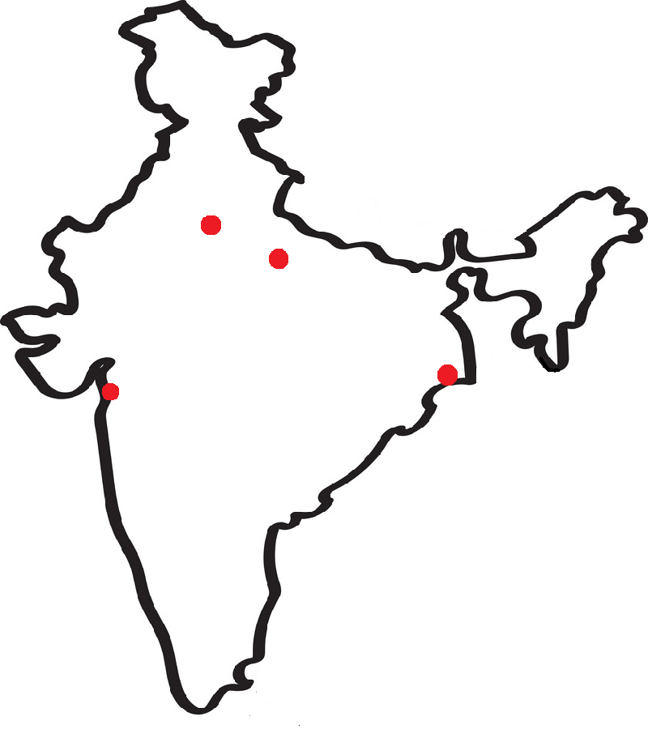

Delhi is the current capital of India.
Even back then, it used to be a very important region.
Many major events took place here.
This was the Mughal and British capital.
The Revolt of 1857 was also centered around here.
Dandi was an important region in Gujarat.
A very decisive and famous event took place here.
This was the destination of Mahatma Gandhi's Salt Satyagraha—a movement to end the British salt monopoly (hence the other name of the movement, the "Dandi March").
Kanpur was one of the most important regions of the Revolt of 1857.
The rebellion here was led by Nana Sahib.
He gathered many troops and banished the British from Kanpur.
However, another controversial event was where boats carrying British civilians were fired upon by the British.
To this day, noone knows who ordered the attack.
Calcutta (now Kolkata) was the former capital of the British.
Being one of the wealthiest regions in India—a lot of British institutions were set up here.
This region had its own army—which was the dominant force in India.